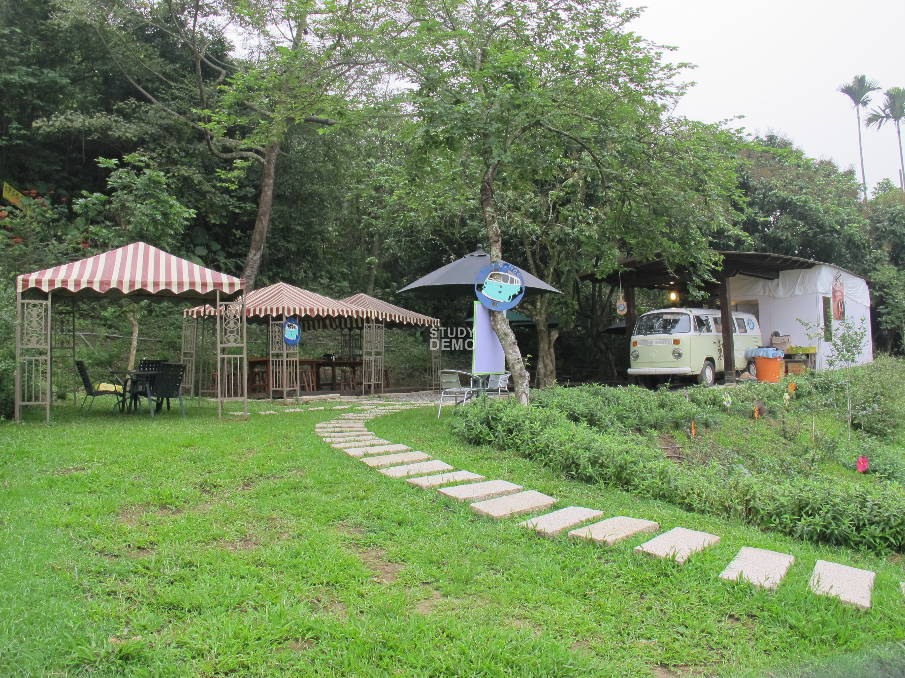

東山咖啡文化館
東山區農會保有日據時代興建的米倉與碾米廠，為了保存極具時代意義的古老建築，活化地方產業，營造在地特色暨物盡其用，在農業委員會、文建會、台南市政府的輔導暨補助經費挹注下與地方鄉親的寄望與支持下，東山區農會秉著服務的心與歷史文化責任的傳承，特別進行閒置空間改造，利用農會旁檜木建造的舊倉庫，結合東山區別具規模與特色的咖啡產業，將閒置倉庫打造成屬於東山區民的心靈空間-東山農會咖啡文化館（東山驛站），提供民眾一個富有知性與感性的休憩據點，透過館內規劃的藝文區、咖啡產品研發成果區、咖啡品嚐雅座區、咖啡生態導覽圖，著實給遊客不虛此行，上了一課咖啡之旅。
咖啡庭園
園林是一種人為創造的、為人們提供休息、觀賞和娛樂的生活環境。中國的園林，廣義的解釋應該包括古代傳統園林、城鎮中公共性質的名勝景點以及現代化的各種綜合性文化休閒公園，專業性的花卉盆景園、藥園、植物園和公共建築群的內外庭院等。比較狹義的解釋主要是指古代傳統園林與公共名勝景點。
